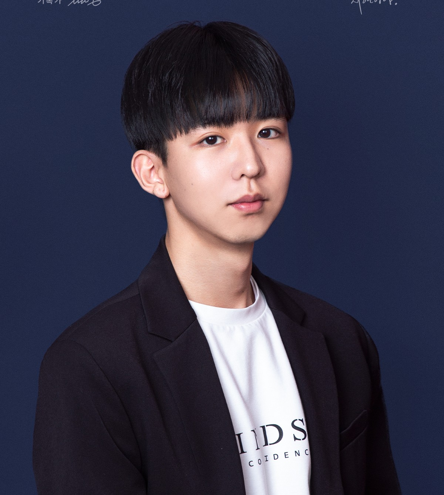

Korea University
Mar. 2027Integrated M.S./Ph.D. in Industrial & Management Engineering
- Advisor: Prof. Seokhyun Chung.
- Selected for the Integrated B.S./M.S./Ph.D. Program in Jul. 2026.
Industrial AI Researcher
Korea University
Industrial & Management Engineering
Reliable Machine Learning & Optimization-aware AI
I build trustworthy and efficient AI methods for structured data and operational decision-making, spanning anomaly detection, robust predictive modeling, and optimization-informed learning for real-world industrial systems.

I am Seon-Ho Yoo, an industrial AI researcher at Korea University focusing on reliable machine learning, anomaly detection, and optimization-informed multi-agent AI for real-world industrial systems.
My research aims to develop trustworthy and efficient AI methods for structured data and operational decision-making problems.
Integrated M.S./Ph.D. in Industrial & Management Engineering
B.S. in Industrial & Management Engineering
Under Review
Working Paper
Research & Project Associate · Korea University
Lab Manager · Jul. 2026 – Present
Research Area
Industrial AI & PHM · Data-centric AI · Robust Predictive Modeling
Research Projects
Research Intern · Seoul National University
Research Area
Graph-based Reasoning · Multi-hop QA · Protein Structure Prediction
Research Projects
Research Intern · Korea University
Research Area
Semi-supervised Learning · Data Augmentation · Demand Forecasting · Optimization
Research Projects
Domestic
Domestic
Open to research collaborations, discussions on industrial AI, and graduate-level opportunities. The fastest way to reach me is by email.
References available on request.